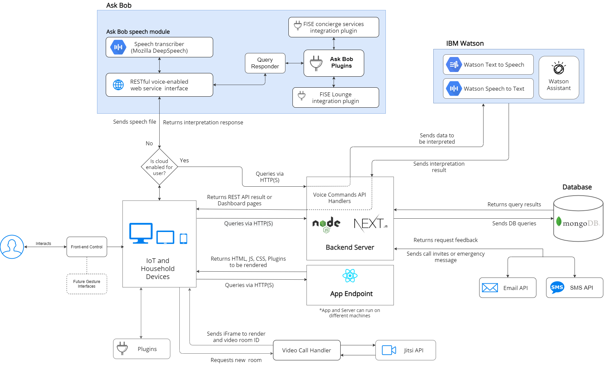
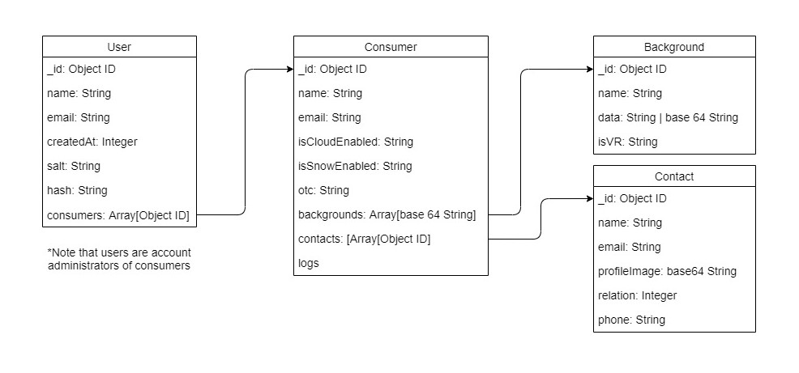
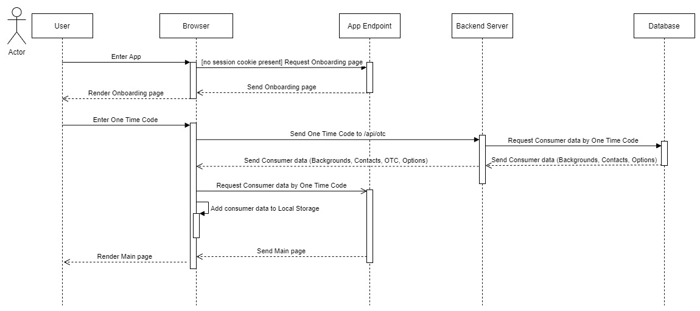
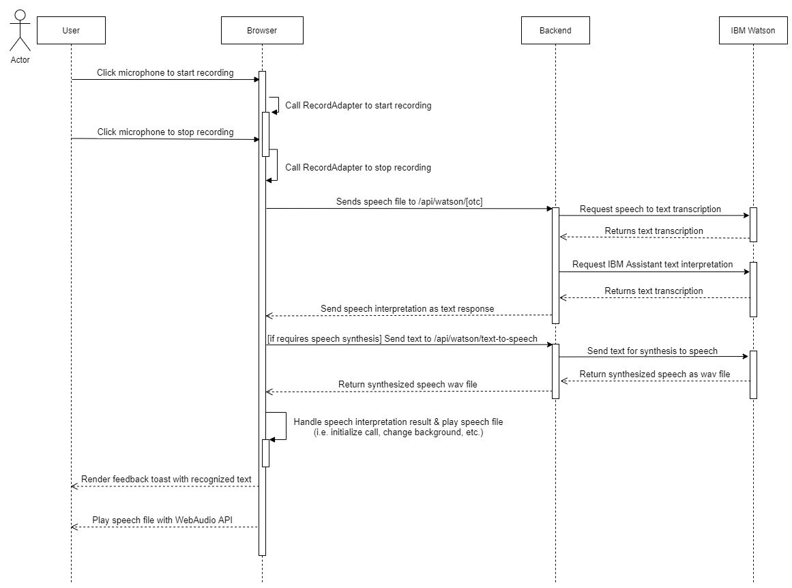
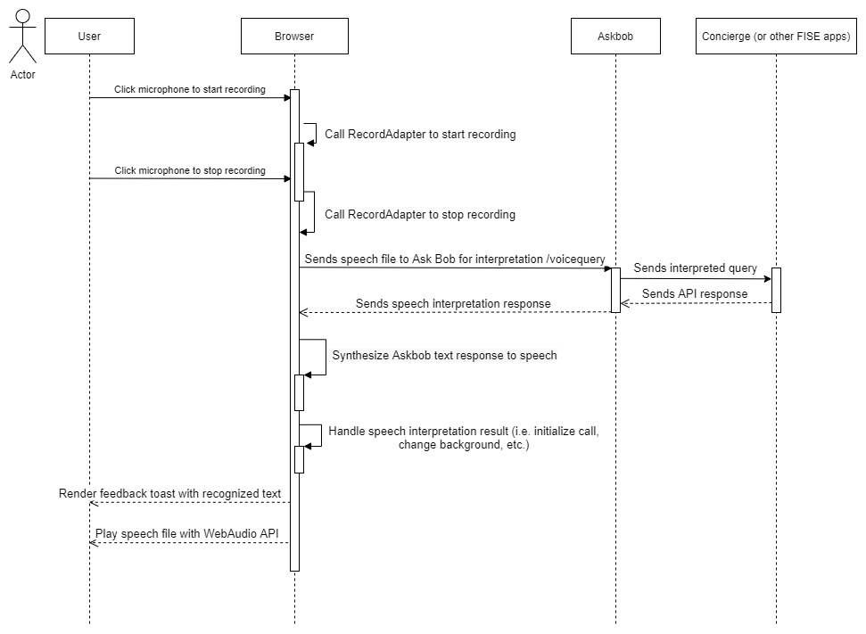
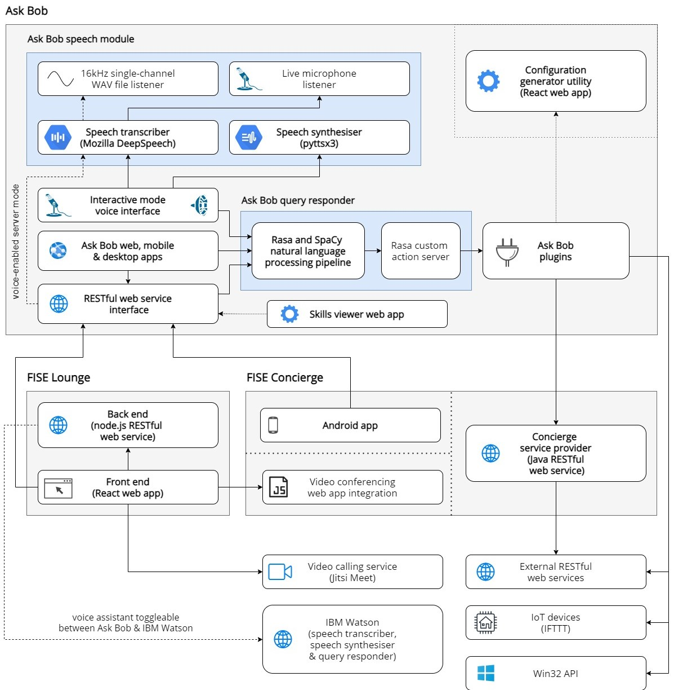

System Architecture Diagram
{kind=link}
The Application will run in the browser of IoT and household devices. These devices will communicate with our application endpoint to fetch the necessary static assets such as JS, CSS and HTML to render the application in the browser.
The Server exposes an API used for modifying or retrieving consumer or contact data from the MongoDB database. This API also serves as a proxy for interacting with external services such as IBM Watson and email or SMS APIs. On the other hand, the server also contains the UI dashboard pages (served using Next.js) from which an administrator can change a consumer’s account.
IoT and households devices can directly interact with the Ask Bob services that can run locally. The FISE Ask Bob service exposes an API for natural language processing and interpretation, serving as an alternative to IBM Watson’s Assistant. It provides additional functionality through the Ask Bob plugins that connects Ask Bob to other applications in the FISE Ecosystem such as Concierge. Therefore, by enabling the integration of the FISE ecosystem, this allows our consumers to interact with FISE APIs through voice commands.
Devices also directly communicate with integrated Plugins that are directly available from the main page. Plugin examples include: BBC live news feed, embedded online games, Ask Bob NLP model training, embedded videos. They have been designed to be easily extended by developers depending on target consumer needs.
Further work will enable Gesture Interfaces to run with our application.
All the main services above can be run locally using Docker containers: server, application endpoint, database, Ask Bob and Concierge, thereofre achieving complete locality of user data.
Reason: privacy-safety was a very important aspect of our features list as we would like our application to be deployed in i.e. care homes as well. We believe this can only be truly achieved if direct user data does not leave the local environment. We thus decided to give the option of minimizing transfer of sensitive data to external API’s by enabling Ask Bob to run locally together with our Database and Server. We think this will provide a good incentive for care homes to make use of our application.
Entity Relationship Diagram
{kind=link}
Every entity has an _id field that represents the object id of the instance at creation. It is automatically generated
by MongoDB.
User represents the account administrators of consumers, that have access to dashboard and can modify Consumer data fields.
Salt and hash fields are parameters used for encrypting and decrypting the user password using the Node.js Crypto module.
Consumer entity contains multiple options such as isCloudEnabled, isWatsonTtsEnabled that allow the customization of
the degree of privacy the consumer benefits from. First field decides whether the consumer will use IBM Watson Assistant
& Speech-to-Text services or FISE Ask Bob for voice commands and emergency messages. isWatsonTtsEnabled chooses
between speech synthesis using IBM Watson Text-to-Speech or WebAPI’s Speech Synthesizer module which runs locally in the
browser. Thus, when both options are set to “false”, the application will only use services that are running locally, improving
privacy-safety.
Logs field keep track of consumer usage loads for allowing further work on API load balancing (i.e. with calls).
Background entity represents the custom images that are to be displayed as backgrounds for the consumer in the
application. If the image is an external image source it will be stored as the URL of that source. If isVR
is set to "true" the image will be interactive.
Contact entity has a profileImage field that represents the profile image to be displayed for its corresponding
consumer in the dashboard.
The phone and email fields of the contacts are very important as they allow the video-call interaction between them and consumers. When a call is initiated, an invitation is sent to their phone number and or email.
OTC Login Sequence Diagram
Below is a sequence diagram describing how a new consumer uses a very simple and accessible one-time login system using a One-Time Code. The One-Time Code is composed of 3 real words, making it easy to remember in case it needs to be reentered (the admin can refresh the OTC).
{kind=link}
Voice Commands Watson Sequence Diagram
Below is the sequence diagram for how a consumer uses voices commands when opting for all IBM Watson services (IBM Speech-to-Text & Watson Assistant – when cloud features are enabled, IBM Text-to-Speech when local speech synthesis is disabled).
{kind=link}
Voice Commands AskBob Sequence Diagram
Below is the sequence diagram for how a consumer uses voices commands when opting for the privacy-safe services of Ask Bob. Speech transcription to text and interpretation is handled locally by Ask Bob, whereas text to speech synthesis is done by the Speech Synthesis WebAPI module, available in browsers.
{kind=link}
Site & Application map
Extra - Integrated FISE Ecosystem Architecture
The following architecture diagram shows the integration between the FISE portfolio of projects. If you want to learn more about FISE Concierge and Askbob we would recommend you to visit their respective websites.
